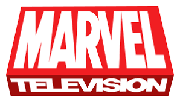

« Кіновсесвіт Marvel» скорочена назва «КВМ» (англ. Marvel Cinematic Universe, або MCU) — вигаданий всесвіт, серія супергеройських фільмів, заснована на коміксах компанії Marvel і розроблена компанією Marvel Studios. Всесвіт було створено шляхом з'єднання в загальну сюжетну лінію декількох фільмів з акторами та персонажами.

ДетальнішеКіновсесвіт Marvel займає перше місце в списку найбільш прибуткових серій фільмів із загальними зборами понад $22,5 млрд, а картини «Месники: Завершення», «Месники: Війна нескінченності», «Месники» і «Месники: Ера Альтрона» посідають відповідно друге, п'яте, восьме й одинадцяте місця в списку найкасовіших фільмів за всю історію кінематографу.